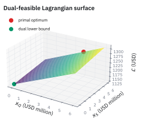
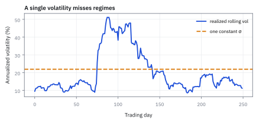
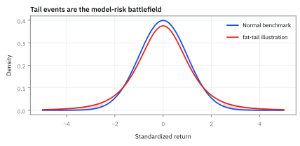

11.4 Why Geometric Brownian Motion (GBM) Is a Sensible Model for Stock Prices
แบบจำลองที่ค่าติดลบไม่ได้และโตแบบทบต้น
ถ้า SPY เดินตาม GBM ที่ drift 10% ความผันผวน 20% ต่อปี วันที่ร่วง 5% ขึ้นไปควรเกิดบ่อยแค่ไหน และในเมื่อตลาดจริงมีวันแบบนั้นหลายวันในปี 2008 กับ 2020 ทำไมโต๊ะยังใช้ GBM?
เฉลย: GBM บอกว่า z = −3.99 โอกาสวันละ 0.0033% หรือราวครั้งเดียวใน 122 ปี ของจริงถี่กว่ามาก GBM จึงผิดที่หาง แต่ยังใช้เป็นภาษากลาง เพราะราคาติดลบไม่ได้ ผลตอบแทนไม่ขึ้นกับระดับราคา มีสูตรปิด และความผิดของมันวัดได้และซ่อมได้ทีละข้อ
ศัพท์ที่ใช้ในหัวข้อนี้
- implied volatility
- ค่า volatility ที่ใส่ใน pricing formula แล้วทำให้ราคา model เท่ากับราคา option ในตลาด ใช้ quote option ด้วยหน่วยที่เทียบข้าม strike และ maturity ได้
- volatility smile
- รูปที่ implied volatility เปลี่ยนตาม strike แทนที่จะคงที่ ใช้เป็นหลักฐานจากตลาดว่าค่า volatility เดียวของ GBM อธิบาย option ทุกตัวไม่ได้
- fat tails
- distribution ที่ให้ probability ของ moves ใหญ่สูงกว่า normal distribution ใช้เตือนว่า normal-tail model อาจประเมิน extreme loss ต่ำเกินไป
- jump diffusion
- model ที่เพิ่ม jump events เข้า diffusion เพื่อให้ราคากระโดดได้ ใช้ stress ข่าว, earnings และ gap risk ที่ continuous GBM พลาด
- delta hedging
- การปรับจำนวน underlying เพื่อลด sensitivity อันดับหนึ่งของ option ต่อราคา ใช้จัดการ small continuous moves แต่เหลือ jump และ transaction-cost risk
- model risk
- ความเสี่ยงที่ decision เสียหายเพราะ assumptions หรือ implementation ของ model ผิด ใช้กำหนด validation, reserves และ stress tests แยกจาก market risk
- normal distribution
- distribution รูประฆังที่กำหนดด้วย mean และ variance ใช้เป็น benchmark ของ standardized GBM log returns และตรวจ tail misfit
- independence
- property ที่รู้ outcome หนึ่งแล้วไม่เปลี่ยน distribution ของอีก outcome ใช้ระบุ assumption ของ future shocks ใน GBM
- underlying
- สินทรัพย์ที่ option หรือ derivative อ้างอิงราคา ใช้กำหนด market factor ที่ hedge ต้องติดตาม
- short
- position ที่ได้ประโยชน์เมื่อมูลค่าของ instrument ลดลงและอาจมี obligation ใช้ระบุ direction ของ option risk ให้ชัด
- long
- position ที่ได้ประโยชน์เมื่อมูลค่าของ instrument เพิ่มขึ้น ใช้ระบุ direction ของ exposure และ P&L
- bid
- ราคาสูงสุดที่ผู้ซื้อพร้อมจ่ายในตลาด ใช้ประเมินราคาที่ขายได้จริงและ execution cost
- ask
- ราคาต่ำสุดที่ผู้ขายพร้อมรับในตลาด ใช้ประเมินราคาที่ซื้อได้จริงและ execution cost
- spread
- ส่วนต่างระหว่าง bid และ ask ใช้เป็นต้นทุนขั้นต่ำของการข้ามตลาดและเป็น input ของ hedge reserve
- liquidity
- ความสามารถซื้อขายขนาดที่ต้องการโดยไม่ขยับราคามาก ใช้กำหนด hedge horizon และ impact stress
- Generalized Autoregressive Conditional Heteroskedasticity (GARCH)
- model ที่ให้ variance วันนี้เรียนรู้จาก shock และ variance ก่อนหน้า ใช้จับ volatility clustering ที่ GBM แบบ volatility คงที่มองไม่เห็น
- standard deviation (SD)
- ความกว้างของการกระจายในหน่วยเดียวกับข้อมูล ใช้วัดว่าวันร่วงแรงอยู่ห่างจุดกลางกี่ช่วง
สัญลักษณ์ที่ใช้ในหัวข้อนี้
| สัญลักษณ์ | ความหมาย | หน่วย |
|---|---|---|
| $S_t$ | underlying price ณ เวลา $t$ | USD/share |
| $r_{t,\Delta t}$ | log return ในช่วงเวลา $\Delta t$ | ไม่มีหน่วย |
| $\sigma$ | constant volatility ที่ GBM สมมติ | $1/\sqrt{\mathrm{year}}$ |
| $K$ | option strike | USD/share |
| $\Delta$ | option delta ต่อหนึ่ง share | share/share |
| $N$ | position size | shares or contracts |
ที่มาที่ไป: รู้ว่ามันผิด แล้วทำไมยังใช้
คำถามที่ยุติธรรมที่สุดที่จะถามกับแบบจำลองนี้คือ ในเมื่อรู้อยู่แล้วว่าตลาดจริงมีหางอ้วนกว่า มีการกระโดด และความผันผวนไม่คงที่ ทำไมยังใช้มันอยู่
คำตอบไม่ใช่เพราะความเคยชิน แต่เพราะมันเป็นแบบจำลองที่ง่ายที่สุดที่ยังผ่านเกณฑ์พื้นฐานสองข้อ คือราคาติดลบไม่ได้ และกฎการเคลื่อนไหวไม่เปลี่ยนตามระดับราคา
และเพราะมันมีสูตรปิด ซึ่งแปลว่าคำนวณได้เร็วพอจะทำใหม่ทุกวินาที และตรวจสอบย้อนหลังได้
แบบจำลองที่ซับซ้อนกว่ามี parameter ให้ประมาณมากกว่า และความคลาดเคลื่อนจากการประมาณนั้น บางครั้งใหญ่กว่าที่ได้จากการอธิบายที่ดีขึ้น หัวข้อนี้จึงเป็นการชั่งน้ำหนักอย่างซื่อสัตย์
ที่มาทางประวัติศาสตร์: จากวิทยานิพนธ์ปี 1900 ของ Bachelier สู่แบบจำลองของ Samuelson
ในปี 1900 Louis Bachelier นักศึกษาปริญญาเอกชาวฝรั่งเศส นำเสนอวิทยานิพนธ์ชื่อ Théorie de la spéculation โดยใช้ Brownian motion จำลองราคาพันธบัตรและสัญญาซื้อขายในตลาด Paris Bourse ซึ่งเกิดขึ้นก่อนที่ Albert Einstein จะตีพิมพ์ผลงานฟิสิกส์เรื่องเดียวกันถึง 5 ปี
ทว่าแบบจำลองของ Bachelier มีจุดบกพร่องร้ายแรง เพราะเขาสมมติว่าราคาหุ้นเคลื่อนที่แบบ arithmetic random walk เมื่อระฆังคว่ำมีหางยาวไม่จำกัดในแดนลบ จึงทำให้ราคาหุ้นมีโอกาสติดลบได้เสมอ ทั้งที่ในความเป็นจริง ผู้ถือหุ้นมีความรับผิดจำกัด (limited liability) ไม่ว่าจะเกิดอะไรขึ้น ราคาไม่มีทางต่ำกว่าศูนย์
ราว ๆ ปี 1965 Paul Samuelson ค้นพบงานของ Bachelier อีกครั้งในห้องสมุด เขาแก้ปัญหานี้โดยเสนอให้มองผลตอบแทนเป็นสัดส่วนการคูณ แทนที่จะเป็นการบวกเม็ดเงินตรง ๆ จึงกลายมาเป็น Geometric Brownian Motion ที่ราคาติดลบไม่ได้ แนวคิดนี้กลายเป็นเสาเข็มที่ Fischer Black, Myron Scholes และ Robert Merton นำไปต่อยอดเป็นสูตรตั้งราคา option ในเวลาต่อมา
สิ่งที่ GBM ทำถูกและมีประโยชน์ทันที
GBM เหมาะเป็น first model เพราะ (1) $S_t>0$ สอดคล้อง limited liability และ (2) return เป็นสัดส่วนของราคา จึง scale จากหุ้นราคา \$20 ไป \$500 ได้โดยไม่เปลี่ยนหน่วย noise. Closed-form structure ยังทำให้ code, calibration checks และ communication เร็วกว่าการเริ่มจาก model ซับซ้อน.
ขั้นที่ 1 — positivity และ scale invariance
เหตุผลข้อแรกที่เลือก model นี้คือราคาติดลบไม่ได้ และกฎการเคลื่อนไหวไม่เปลี่ยน ไม่ว่าหุ้นจะราคา 10 USD หรือ 10,000 USD
exponential รับประกันราคาบวก และ future gross return ratio ไม่ขึ้นกับระดับ $S_t$; สอง property นี้ตอบข้อจำกัดพื้นฐานของ equity price model
ขั้นที่ 2 — ที่มาของ GBM: จากการคูณผลตอบแทนย่อย สู่เลขชี้กำลังด้วย Taylor Series
การพิสูจน์นี้เชื่อมโยงโลก discrete เข้ากับโลก continuous อย่างสมบูรณ์ ทำให้เห็นว่าพจน์ลบครึ่ง variance ไม่ใช่ของแปลกประหลาดที่โผล่มาจากฟ้า แต่เป็นผลพวงโดยตรงจากพจน์อันดับสองของ Taylor series ที่สะสมผ่านการทบต้น
ลองตรวจด้วยตัวเลขจริงของการเทรด 252 วันในหนึ่งปี ($T=1$): ถ้าหุ้นมี drift 10% และความผันผวน $\sigma=0.20$ ต่อปี ในแต่ละวันการแกว่งตัวจะสร้างแรงฉุดขนาดเล็ก เมื่อสะสมครบ 252 วัน ผลรวมของแรงฉุดจะเท่ากับ $-0.5 \times (0.20)^2 = -0.02$ หรือลดลง 2% ต่อปีเต็มพอดี
ทำไมราคาหุ้นต้องเขียนในรูป exponential คำตอบไม่ได้มาจากความสวยงาม แต่มาจากการทบต้นของผลตอบแทนรายวัน เมื่อแบ่งเวลา $T$ เป็น $n$ ก้าวสั้น ๆ ราคาปลายทางคือการเอาตัวคูณผลตอบแทนในแต่ละก้าวมาคูณเรียงกัน
ใส่ log เพื่อเปลี่ยนผลคูณให้กลายเป็นผลบวก จากนั้นใช้ Taylor series กระจาย $\log(1+u)$ จะเห็นพจน์กำลังสองโผล่ออกมาทันที ซึ่งความผันผวนยกกำลังสองคูณ $\Delta t$ จะไม่หายไปแม้ก้าวเวลาจะสั้นลงจนเข้าใกล้ศูนย์
ผลบวกก้อนสุ่มจะ converge สู่ Brownian motion ตาม Central Limit Theorem (CLT) และพจน์กำลังสองจะรวมกันเป็นตัวหักลบครึ่ง variance พอดี เมื่อแปลงกลับด้วย exponential จึงได้สูตร GBM ที่ใช้กันทั่วโลก
แล้วเอาไปใช้ทำอะไรได้จริงบ้าง
การรู้ว่าทำไมถึงเลือกแบบจำลองนี้ และมันผิดตรงไหน คือความต่างระหว่างคนใช้เครื่องมือกับคนเข้าใจเครื่องมือ
ใช้ตอบคำถามในการสัมภาษณ์งานและในการทบทวนแบบจำลอง ว่าทำไมถึงใช้ตัวนี้ไม่ใช่ตัวอื่น
ใช้ตัดสินว่าเมื่อไรควรเปลี่ยนไปใช้แบบจำลองที่ซับซ้อนกว่า ซึ่งมีต้นทุนในการดูแลสูงกว่ามาก
ใช้ออกแบบมาตรการควบคุมความเสี่ยงที่ครอบส่วนที่แบบจำลองมองไม่เห็น
Figure 11.4a — หุ้น 20 กับ 500 USD ใช้ตัวคูณชุดเดียวกัน

แกนซ้ายคือหุ้น 20 USD แกนขวาคือหุ้น 500 USD สเกลห่างกัน 25 เท่า ใส่ตัวคูณรายวันชุดเดียวกัน จุดทุกจุดทับกันพอดี วันที่ 1 หุ้นถูกขึ้น 0.82 USD หุ้นแพงขึ้น 20.40 USD เป็นเปอร์เซ็นต์เท่ากันคือ 4.08% ตัวคูณของ GBM ไม่มีราคาอยู่ข้างใน กฎเดียวจึงใช้กับหุ้นทุกระดับราคา
assumption audit ก่อนใช้ output
GBM สมมติ constant volatility, normal log returns, continuous paths, independent increments และ frictionless continuous trading. แต่ละข้อเป็น choice ที่ต้อง map ไป decision horizon: one-day risk near earnings ยอมรับ jump-free model ไม่ได้, ส่วน rough long-horizon scenario อาจใช้ baseline ได้ถ้ามี sensitivity overlay.
Figure 11.4b — ความผันผวนมาเป็นช่วง ไม่คงที่

จำลองหนึ่งปีเทรด 252 วันที่มีสามช่วง ยาว 80, 55 และ 117 วัน ความผันผวนรายปี 12.7%, 44.4% และ 17.5% เส้นน้ำเงินคือความผันผวนย้อนหลัง 15 วัน เส้นประคือค่าคงที่ตัวเดียว 21.8% แบบที่ GBM ใช้ ในช่วงร้อนตัวเลขคงที่ต่ำกว่าของจริงเกินสองเท่า ขนาด hedge และวงเงินความเสี่ยงที่คิดจากตัวเลขเดียวจึงเล็กเกินไปตอนที่อันตรายที่สุด
ขั้นที่ 3 — normal tail benchmark versus stressed tail
แต่ต้องซื่อสัตย์ด้วยว่าแบบจำลองนี้ผิดตรงไหน ขั้นนี้ให้ตัวเลขที่แบบจำลองทำนาย เพื่อเอาไปเทียบกับความถี่ที่เกิดขึ้นจริง การเทียบนั้นคือเนื้อหาของหัวข้อ 17.7 และมักจบด้วยการที่แบบจำลองแพ้
ยกผลของหัวข้อ 11.2 มาต่อ log return ในช่วงสั้น ๆ ก็ยังเป็นระฆัง จากนั้นทำอย่างเดียวกับขั้นก่อน คือลบจุดกลางและหารความกว้างทั้งสองข้างของอสมการ ตัวหารเป็นบวกเสมอ เครื่องหมายจึงไม่พลิก แล้วอ่านพื้นที่หางซ้ายจาก $\Phi$ ตรง ๆ
แต่ตัวเลขที่ได้ต้องใช้ให้ถูกวิธี มันคือเส้นเทียบ ไม่ใช่คำตอบสุดท้าย เพราะแบบจำลองนี้ไม่มีการกระโดด และสมมติว่าความเหวี่ยงคงที่ตลอด ทั้งสองข้อผิดในวันที่สำคัญที่สุด
ข้อมูลจริงจึงทะลุเกณฑ์บ่อยกว่าที่สูตรนี้บอกเสมอ วิธีใช้ที่ถูกคือดูว่าของจริงเกินเส้นนี้กี่เท่า ตัวเลขนั้นบอกขนาดของสิ่งที่แบบจำลองมองไม่เห็น
แทนเลข SPY วันที่ร่วง 5% อยู่ห่างจุดกลาง 3.99 SD ของวัน GBM จึงบอกว่าเกิดครั้งเดียวในราว 30,762 วันทำการหรือ 122 ปี แต่ในปี 2008 และ 2020 ปีเดียวก็มีวันแบบนี้หลายวัน ผลตอบแทนรายวันจริงมี kurtosis ราว 5 ถึง 10 ไม่ใช่ 3 ของระฆัง หางจึงหนากว่าหลายสิบเท่า
Figure 11.4c — SD เท่ากัน แต่หางต่างกันมาก

เส้นทึบคือผลตอบแทนรายวันแบบ GBM ที่ SD 1.26% เส้นประคือ t distribution ที่มี 3 degrees of freedom ปรับให้ SD เท่ากันพอดี ใช้เป็นตัวอย่างหางอ้วน ไม่ใช่ข้อมูลจริง แกนตั้งเป็น log เพื่อให้เห็นหาง ตรงกลางสองเส้นแทบเหมือนกัน ความต่างทั้งหมดอยู่ที่หาง
ที่เส้น −5% ความสูงของ density สองเส้นต่างกันราว 16 เท่า ส่วนโอกาสสะสมตั้งแต่ −5% ลงไปต่างกัน 95 เท่า คือ 0.0033% กับ 0.31% ต่อวัน หรือครั้งเดียวใน 122 ปีตามขั้นที่ 3 กับ 0.78 ครั้งต่อปี SD ตัวเดียวมองไม่เห็นความต่างนี้
ความต่อเนื่องล้มเหลวตรงวันที่ต้อง hedge พอดี
ข่าว Earnings ข่าวจากหน่วยงานกำกับ และข่าวข้ามคืนทำให้ราคาเกิด gap ได้ Delta hedge ยกเลิก exposure อันดับหนึ่งได้เฉพาะการเคลื่อนไหวเล็กและต่อเนื่อง เมื่อราคากระโดดจากระดับหนึ่งไปอีกระดับหนึ่ง จะไม่มีลำดับการซื้อขายระหว่างทางมาชดเชย จึงต้องเก็บ jump scenarios กำหนด event-day limits และบวก liquidity add-ons แทนการรายงานว่า hedge ภายใต้ continuous diffusion ป้องกันความเสี่ยงได้ครบถ้วน
Figure 11.4d — ราคากระโดดข้ามคืน hedge ปรับไม่ทัน

ปิด 98 USD เปิด 78 USD ร่วง 20.4% ในคืนเดียว ใต้ GBM ที่ความผันผวนรายวัน 1.26% นี่คือราว −18 SD ซึ่งแทบเป็นไปไม่ได้ แต่ของจริงเกิดจากข่าวงบหรือคดี ระหว่างปิดกับเปิดไม่มีการซื้อขาย hedge ที่ตั้งใจปรับทีละนิดจึงไม่มีโอกาสปรับเลย ขาดทุนทั้งก้อนตรงช่วงแรเงา
ขั้นที่ 4 — นิยามของการตรวจด้วยราคาตลาด: ถ้าแบบจำลองถูก ต้องเห็นอะไร
บรรทัดนี้ไม่ใช่ผลที่พิสูจน์ มันเป็น เงื่อนไขที่กำหนดขึ้น เพื่อใช้ตรวจ ตรรกะมีข้อเดียว: ถ้าแบบจำลองที่มีความเหวี่ยงค่าเดียวอธิบายตลาดได้จริง ค่าความเหวี่ยงที่ย้อนกลับมาจากราคา option ทุกตัวต้องเท่ากันหมด ของจริงไม่เท่า และรูปที่ไม่เท่านั้นมีชื่อว่า smile ซึ่งเป็นหลักฐานว่าแบบจำลองนี้ไม่ครบ
ถ้า model มี volatility เดียวและอธิบายตลาดได้ implied volatility ที่ย้อนจากทุก option ต้องเท่ากัน; smile หรือ skew คือ observable model discrepancy
อ่านว่า: ความเหวี่ยงที่ย้อนกลับมาจากราคา option ต้องเท่ากันทุก strike และทุกอายุ ของจริง option ที่ strike ห่างจากราคาปัจจุบันมาก มี implied volatility สูงกว่าเสมอ ตลาดกำลังบอกว่ามันไม่เชื่อ GBM
แต่ตลาดก็ยังพูดด้วยภาษาของ GBM แทนที่จะบอกว่า option ราคา 4.72 USD คนบอกว่า implied volatility 23% ซึ่งเทียบข้ามหุ้นและข้ามอายุได้ทันที GBM จึงเป็นระบบพิกัด ไม่ใช่ความเชื่อ
นี่คือสิ่งที่ต้องเห็นถ้าแบบจำลองความเหวี่ยงคงที่อธิบายตลาดได้จริง ของจริงไม่เท่ากัน และรูปที่ไม่เท่านั้นคือหลักฐานว่าแบบจำลองนี้ไม่ครบ
Figure 11.4e — ตลาดตั้งราคา option ด้วยความผันผวนไม่เท่ากันทุก strike

ตัวอย่างรูปร่างทั่วไปของ implied volatility หุ้น ไม่ใช่ข้อมูลจริงวันใดวันหนึ่ง strike ที่ 75% ของราคาปัจจุบันใช้ราว 24% ที่ราคาปัจจุบันราว 19% ที่ 125% ราว 15% ส่วน GBM ใช้ 20% ตัวเดียวทุก strike ตลาดจ่ายแพงกว่าสำหรับประกันขาลง แปลว่าตลาดเชื่อว่าหางซ้ายอ้วนกว่าที่ GBM บอก
model hierarchy สำหรับ desk ไม่ใช่ศาสนา
ใช้ GBM เป็นระบบพิกัดตั้งต้น คือใช้มันปรับราคาให้เทียบกันได้ สร้างเส้นทางฐานไว้เปรียบเทียบ ตรวจว่าหน่วยของ parameter ถูกต้อง และใช้เป็นภาษากลางเวลาพูดถึง implied volatility
จากนั้นค่อยเลือกตัวซ่อมให้ตรงกับอาการที่เจอ: ความผันผวนจับกลุ่มเป็นช่วง ใช้ stochastic volatility หรือ GARCH; ราคากระโดดข้ามช่วง ใช้ jump diffusion; ราคาสิทธิ์โค้งเอียงตาม strike ใช้ local หรือ stochastic volatility surface; และถ้าต้นทุนการเทรดกินกำไร ใช้การ hedge ที่คิดค่าธรรมเนียมเข้าไปด้วย
เพิ่มความซับซ้อนเฉพาะเมื่อการตัดสินใจเรื่องความเสี่ยงเปลี่ยนไปจริงเพราะข้อบกพร่องนั้น ไม่ใช่เพราะ model ใหม่ดูน่าเชื่อกว่า
ขั้นที่ 5 — นิยามของรายการที่ต้องมีในบัญชี hedge
บรรทัดนี้เป็น รายการที่เรากำหนดขึ้น ว่าต้องมีในบัญชี ไม่ใช่สมการที่พิสูจน์ได้ พจน์แรกคือส่วนที่แบบจำลองอธิบายได้ ส่วนที่เหลือคือสิ่งที่มันอธิบายไม่ได้ และถ้าไม่จดไว้แยกกัน กำไรขาดทุนที่แบบจำลองบอกจะถูกเข้าใจผิดว่าเป็นเงินจริง ค่าแต่ละตัวคำนวณอย่างไรเป็นเรื่องของหัวข้อ 13.3 และ 18.4
delta term เป็น first-order continuous approximation; gamma error, jump loss, bid-ask spread และ price impact ต้องอยู่ใน attribution เพื่อไม่ให้ model P and L ถูกเข้าใจเป็น realized P and L
ขั้นที่ 6 — ค่าเฉลี่ยกับค่ากึ่งกลางไม่เท่ากัน และส่วนต่างนี้ GBM บังคับ
แบบจำลองนี้บังคับผลที่คนส่วนใหญ่ไม่ได้คาดไว้: ราคาที่คาดหวังกับราคาที่พบได้บ่อยที่สุด เป็นคนละตัวเลข และต่างกันไม่น้อย
สาเหตุคือ drift ที่ทบต้นจริง ๆ ไม่ใช่ $\mu$ แต่เป็น $\mu$ ลบครึ่งหนึ่งของ variance ดังนั้นการอ้างค่าเฉลี่ยเป็นสิ่งที่ควรคาดหวังจึงทำให้คาดหวังสูงเกินไป
ราคาที่คาดหวังคำนวณจากการยกกำลังของ drift เต็ม เพราะค่าเฉลี่ยของ lognormal ใช้ parameter นั้น ส่วนราคาที่มีโอกาสเกิดเท่ากันด้านบนและด้านล่าง หรือค่ากึ่งกลาง ใช้ drift ที่หักครึ่ง variance ออกแล้ว
แทนตัวเลขสิบปี: ค่าเฉลี่ยได้ 271.83 ขณะที่ค่ากึ่งกลางได้ 222.55 ต่างกันราว 22% ตัวเลขทั้งสองถูกต้องพร้อมกัน ไม่ใช่การคำนวณผิด
ความต่างนี้มาจาก skewness ขวาของ distribution ราคาสูงมากดึงค่าเฉลี่ยขึ้น แต่ไม่ดึงค่ากึ่งกลาง เพราะค่ากึ่งกลางสนใจแค่ว่ามีกี่เส้นทางที่สูงกว่า ไม่ได้สนใจว่าสูงเท่าไร
แปลว่าอะไร: ถ้าต้องรายงานสิ่งที่คาดหวัง ให้ใช้ค่าเฉลี่ยและระบุว่ามันสูงกว่าค่าปกติ แต่ถ้าต้องวางแผนกำลังคนหรือกำลังซื้อ ให้ใช้ค่ากึ่งกลาง เพราะนั่นคือสิ่งที่เกิดขึ้นบ่อยกว่า
Figure 11.4f — SPY สิบปี: ค่าเฉลี่ย 271.83 กับ median 222.55

เริ่ม 100 drift 10% ความผันผวน 20% เส้นเขียวคือค่าเฉลี่ย เส้นส้มคือ median ห่างกันมากขึ้นทุกปี ครบสิบปีต่างกัน 22% ตามขั้นที่ 6 แถบคือช่วง 25% ถึง 75% จาก 145 ถึง 341 เส้นค่าเฉลี่ยอยู่เหนือ median ตลอด เพราะหางขวาลากขึ้น แต่ครึ่งหนึ่งของเส้นทางจบต่ำกว่า 222.55
คำตอบ — GBM ผิดตรงไหน และทำไมยังใช้
คำถาม: SPY ที่ drift 10% ความผันผวน 20% วันที่ร่วง 5% ควรเกิดบ่อยแค่ไหนตาม GBM และทำไมโต๊ะยังใช้แบบจำลองนี้?
ของที่มี: ขั้นที่ 1 ถึง 4 และ 6
1. ความผันผวนรายวัน 0.20/15.8745 = 1.26% จุดกลางรายวัน 0.08/252 = 0.03%
2. วันร่วง 5% อยู่ที่ z = −3.994 โอกาส 0.0033% ต่อวัน หรือราวครั้งเดียวใน 122 ปี ของจริงเกิดหลายวันในปีเดียว
3. GBM ยังผ่านสองเกณฑ์ที่แบบจำลองบวกเงินตรง ๆ ทำไม่ได้ ราคาติดลบไม่ได้ และตัวคูณในอนาคตไม่มี S_t อยู่ข้างใน หุ้น 20 USD กับ 500 USD จึงใช้กฎเดียวกัน
4. ค่าเฉลี่ยกับค่ากลางสิบปีคือ 271.83 กับ 222.55 ต่างกัน 22% ซึ่งแบบจำลองบอกไว้ล่วงหน้า
ตรวจเองใน 10 วินาที: 5% ÷ 1.26% ≈ 4 SD และหางที่ 4 SD ของระฆังคือราวสามในแสน
แปลว่าอะไร: ใช้ GBM เป็นระบบพิกัดตั้งต้น แล้วซ่อมตามอาการ ความผันผวนเกาะกลุ่มใช้ GARCH ราคากระโดดใช้ jump model หางอ้วนใช้ stress test และ implied volatility surface เพิ่มความซับซ้อนเฉพาะเมื่อมันเปลี่ยนการตัดสินใจจริง อย่าใช้ความผันผวนรายวันของ GBM ปลอบใจว่า hedge จะรอดวันข่าว
โค้ดตรวจหางของ GBM, Taylor drag และค่าเฉลี่ยกับค่ากลาง
import numpy as np
from scipy.stats import norm
mu, sigma, dt = 0.10, 0.20, 1 / 252
m, sd = (mu - sigma**2 / 2) * dt, sigma * np.sqrt(dt)
assert abs(m - 0.000317) < 1e-6 and abs(sd - 0.012599) < 1e-6
z = (-0.05 - m) / sd
p = norm.cdf(z)
assert abs(z + 3.994) < 1e-3 and abs(p - 3.25e-5) < 1e-7
assert abs(1 / p / 252 - 122) < 1 # once in about 122 years
rng = np.random.default_rng(114) # compounding 252 daily simple returns
R = mu * dt + sd * rng.standard_normal((20_000, 252))
logS = np.log1p(R).sum(axis=1)
assert abs(logS.mean() - (mu - sigma**2 / 2)) < 0.004 # the -sigma^2/2 = -0.02 drag appears
assert abs(100 * np.exp(1.0) - 271.83) < 0.01 and abs(100 * np.exp(0.8) - 222.55) < 0.01
assert abs(np.exp(0.2) - 1.2214) < 1e-4
assert abs(500 * 0.05 * 100_000 - 2_500_000) < 1e-6 # the event-risk exampleโค้ดตรวจว่า GBM ให้วันร่วง 5% ที่ z = −3.994 และครั้งเดียวในราว 122 ปี จำลองการทบต้นผลตอบแทนรายวัน 252 วันว่าได้แรงฉุด −0.02 ตามขั้นที่ 2 และตรวจค่าเฉลี่ยกับค่ากลางสิบปี
ตัวอย่างเสริม — ขออนุมัติรับ event risk ของหุ้นสมมติ
สมมติ desk ถือ short exposure ของหุ้นสมมติเทียบเท่า delta 100,000 shares และใช้ spot \$500. Overnight gap 5% คือราคาเปลี่ยน \$25 ต่อ share ดังนั้นผลกระทบอันดับแรกจาก delta อย่างเดียวอยู่ที่ราว \$2.5M ก่อน gamma, vega, spread และ impact. ค่า daily sigma จาก GBM ช่วยกำหนดกรอบวันปกติได้ แต่การอนุมัติข้าม event ต้องทำ gap stress และตีราคา volatility surface ใหม่ มิฉะนั้น hedge จะผ่านเฉพาะวันที่อากาศดี.
คำถาม: overnight gap 5% ของ spot USD 500 กระทบ delta-equivalent 100,000 shares กี่ USD ก่อน gamma?
ของที่มี: spot USD 500, move 5%, delta-equivalent 100,000 shares. นี่ยังเป็น first-order approximation.
1. คูณ USD 500 ด้วย 5% ได้ราคาเปลี่ยน USD 25 ต่อ share.
2. คูณ USD 25 ด้วย 100,000 shares ได้ delta amount USD 2.5M.
เฉลย: gap เพียง 5% สร้าง first-order P&L ราว USD 2.5M.
เช็ก 10 วินาที: USD 500 × 0.05 × 100,000 = USD 2,500,000.
งานจริง: ใช้ gap stress แยกจาก daily GBM band ก่อนอนุมัติ hedge.
กับดัก: อย่าใช้ volatility รายวันมาปลอบใจตัวเองว่า hedge รอด event gap; gamma, vega, spread และ impact ยังตามมาได้.
ตัวอย่างเสริม — ค่าเฉลี่ยกับค่ากลางสิบปี
คำตอบ: ด้วย drift 10% volatility 20% และเวลาสิบปี ราคาที่คาดหวังคือ 271.83 ขณะที่ค่ากึ่งกลางคือ 222.55 ต่างกันราว 22%
ตรวจเองใน 10 วินาที: หักครึ่ง variance ออกจาก drift ก่อนแล้วค่อยยกกำลัง ถ้าใช้ drift เต็มกับค่ากึ่งกลางจะได้ตัวเลขที่สูงเกินไป
ใช้ตัดสินใจ: เวลาตั้งเป้าราคาปลายทาง ให้ระบุให้ชัดว่าเป้านั้นเป็นค่าเฉลี่ยหรือค่ากึ่งกลาง เพราะสองตัวเลขนี้ต่างกันหนึ่งในห้า และการสลับกันทำให้แผนผิดตั้งแต่ต้น
กับดัก: เลิกใช้ GBM แล้วคิดว่า model risk หาย
model ที่ซับซ้อนกว่ามี calibration risk, unstable parameters และ implementation risk ของตัวเอง. ทำ comparison against GBM baseline, backtest breaches, document applicability horizon และ attach reserve to known gaps; professional skepticism คือ control ไม่ใช่ model name.
ข้อจำกัด: วิธีนี้สมมติอะไร และของจริงเป็นอย่างไร
| เรื่อง | วิธีนี้สมมติว่า | ของจริงเป็นอย่างไร | ผลที่ตามมาเวลาใช้งาน |
|---|---|---|---|
| ความสมเหตุสมผล | เหตุผลที่ยกมาพิสูจน์ว่าแบบจำลองถูก | มันพิสูจน์แค่ว่าไม่ผิดอย่างโจ่งแจ้ง | การที่ราคาติดลบไม่ได้ ไม่ได้แปลว่าส่วนที่เหลือของแบบจำลองถูก |
| การทดแทน | มีแบบจำลองที่ดีกว่ารออยู่ | แบบจำลองที่ซับซ้อนกว่ามี parameter ให้ประมาณมากกว่า | ความคลาดเคลื่อนจากการประมาณอาจมากกว่าที่ได้จากการอธิบายที่ดีขึ้น |
| ขอบเขต | ใช้ได้กับสินทรัพย์ทุกชนิด | ใช้ไม่ได้กับสินค้าโภคภัณฑ์บางตัวและอัตราดอกเบี้ย | ต้องเลือกแบบจำลองตามชนิดสินทรัพย์ ไม่ใช่ใช้ตัวเดียวกับทุกอย่าง |
แถวกลางเป็นเหตุผลที่โต๊ะจำนวนมากยังใช้แบบจำลองง่าย ๆ นี้อยู่ ทั้งที่รู้ข้อจำกัดดี
สรุปที่ใช้ได้จริง
- GBM มีเหตุผลสำหรับ positive equity prices และ proportional returns
- ความผันผวนคงที่ หางบางแบบ normal เส้นราคาต่อเนื่องไม่กระโดด ผลตอบแทนแต่ละช่วงไม่เกี่ยวกัน และเทรดได้โดยไม่มีต้นทุน ทั้งห้าข้อนี้เป็นข้อสมมติที่เราเลือกใส่เอง ไม่ใช่ข้อเท็จจริงของตลาด
- smile, clusters และ gaps เป็น diagnostics ที่ market เปิดเผยให้เห็น GBM ที่ 20% ต่อปีบอกว่าวันร่วง 5% เกิดครั้งเดียวใน 122 ปี ของจริงเกิดหลายวันในปีเดียว
- ใช้ GBM เป็น baseline แล้ว overlay stress, calibration และ execution controls ตาม decision
- ภายใต้ GBM ราคาที่คาดหวังกับค่ากึ่งกลางเป็นคนละตัวเลข: drift ที่ทบต้นคือ μ−σ²/2 ดังนั้นค่ากึ่งกลางจึงต่ำกว่าค่าเฉลี่ย และต่างกันราว 22% ในตัวอย่างสิบปี